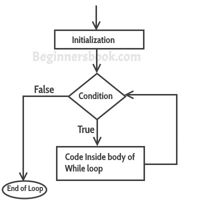

What is Loop
A loop is used for executing a block of statements repeatedly until a given condition returns false.
while statement

A while statement executes its statements as long as a specified condition evaluates to true.
A while statement looks as follows:
while (condition){
statements
increments/decrements
}
for statement
 A for loop repeats until a specified condition evaluates to false. The JavaScript for loop is similar to the Java and C for loop.
A for statement looks as follows:
A for loop repeats until a specified condition evaluates to false. The JavaScript for loop is similar to the Java and C for loop.
A for statement looks as follows:
for ([initialExpression]; [conditionExpression]; [incrementExpression]){
statements
}
do...while statement
 The do...while statement repeats until a specified condition evaluates to false.
A do...while statement looks as follows:
The do...while statement repeats until a specified condition evaluates to false.
A do...while statement looks as follows:
do{
statements
increments/decrements
}while (condition);
Infinite Loop (pre-requirements: exercises of loops)
What is infinite loop?
An infinite loop is a looping construct that does not terminate the loop and executes the loop forever.
It is also called an indefinite loop or an endless loop. It either produces a continuous output or no output.
When to use an infinite loop
An infinite loop is useful for those applications that accept the user input and generate the output continuously until
the user exits from the application manually. In the following situations, this type of loop can be used:
All the operating systems run in an infinite loop as it does not exist after performing some task.
It comes out of an infinite loop only when the user manually shuts down the system.
All the servers run in an infinite loop as the server responds to all the client requests.
It comes out of an indefinite loop only when the administrator shuts down the server manually.
All the games also run in an infinite loop. The game will accept the user requests until the user exits from the game.
We can create an infinite loop through various loop structures.
The following are the loop structures through which we will define the infinite loop:
for loop
while loop
do-while loop
for infinite loop
for(; ;)
{
// body of the for loop.
}
As we know that all the parts of the 'for' loop are optional, and in the above for loop,
we have not mentioned any condition; so, this loop will execute infinite times.
Let's understand through an example.
for(;;)
{
console.log("Hello javascript");
}
In the above code, we run the 'for' loop infinite times, so "Hello javatpoint" will be displayed infinitely.
while infinite loop
Now, we will see how to create an infinite loop using a while loop. The following is the definition for the infinite while loop:
while(1)
{
// body of the loop..
}
In the above while loop, we put '1' inside the loop condition. As we know that any non-zero integer represents the true condition
while '0' represents the false condition.
Let's look at a simple example.
let i=0;
while(1)
{
i++;
console.log(i);
}
In the above code, we have defined a while loop, which runs infinite times as it does not contain any condition.
The value of 'i' will be updated an infinite number of times.
do..while infinite loop
The do..while loop can also be used to create the infinite loop. The following is the syntax to create the infinite do..while loop.
do
{
// body of the loop..
}while(1);
The above do..while loop represents the infinite condition as we provide the '1' value inside the loop condition.
As we already know that non-zero integer represents the true condition, so this loop will run infinite times.
How to break infinite loop
Till now, we have seen various ways to define an infinite loop. However, we need some approach to come out of the infinite loop.
In order to come out of the infinite loop, we can use the break statement.
Let's understand through an example.
let password;
while(1){
password=Number(prompt('Enter your password'));
if(password==12345){
break;
}
console.log('password didnot match');
}
In the above code, we have defined the while loop, which will execute an infinite number of times until we press 12345.
We have added the 'if' statement inside the while loop. The 'if' statement contains the break keyword,
and the break keyword brings control out of the loop.
Unintentional infinite loops
Sometimes the situation arises where unintentional infinite loops occur due to the bug in the code. If we are the beginners,
then it becomes very difficult to trace them. Below are some measures to trace an unintentional infinite loop:
We should examine the semicolons carefully. Sometimes we put the semicolon at the wrong place, which leads to the infinite loop.
int i=1;
while(i<=10);
{
console.log(i);
i++;
}
In the above code, we put the semicolon after the condition of the while loop which leads to the infinite loop.
Due to this semicolon, the internal body of the while loop will not execute.
We should check the logical conditions carefully. Sometimes by mistake,
we place the assignment operator (=) instead of a relational operator (= =).
let ch='n';
while(ch='y')
{
console.log("hello");
}
In the above code, we use the assignment operator (ch='y') which leads to the execution of loop infinite number of times.
We use the wrong loop condition which causes the loop to be executed indefinitely.
let i;
for(i=1;i>=1;i++)
{
console.log("hello");
}
The above code will execute the 'for loop' infinite number of times. As we put the condition (i>=1),
which will always be true for every condition, it means that "hello" will be printed infinitely.
We should be careful when we are using the break keyword in the nested loop because
it will terminate the execution of the nearest loop, not the entire loop.
let i;
while(1)
{
for(i=1;i<=10;i++)
{
if(i%2==0)
{
break;
}
}
}
In the above code, the while loop will be executed an infinite number of times as we use the break keyword in an inner loop.
This break keyword will bring the control out of the inner loop, not from the outer loop.
We should be very careful when we are using the floating-point value inside the loop
as we cannot underestimate the floating-point errors.
let x = 3.0;
while (x != 4.0) {
console.log(x);
x += 0.1;
}
In the above code, the loop will run infinite times as the computer represents a floating-point value as a real value.
The computer will represent the value of 4.0 as 3.999999 or 4.000001, so the condition (x !=4.0) will never be false.
The solution to this problem is to write the condition as (x<=4.0).